Biến ý tưởng thành hình ảnh có cảm xúc, mang dấu ấn riêng và câu chuyện của bạn.
CREATIVE DIRECTION
Nơi trí tưởng tượng thành hình
YUKI kết hợp thẩm mỹ, concept và công nghệ AI để tạo nên những hình ảnh độc đáo.
01
AI Visual
Concept cá nhân, ảnh cưới, sinh nhật, fashion, beauty và hình ảnh thương hiệu.
02
Thiết kế đồ họa
Logo, nhận diện, poster, banner, catalogue và ấn phẩm truyền thông.
03
AI Learning
Chia sẻ kiến thức AI từ cơ bản đến ứng dụng thực tế trong công việc.
NEW EDITORIAL · 2026
Lụa trắng trong gió
Một chuyển động mềm mại giữa ánh sáng, chất liệu và vẻ đẹp thanh thoát.
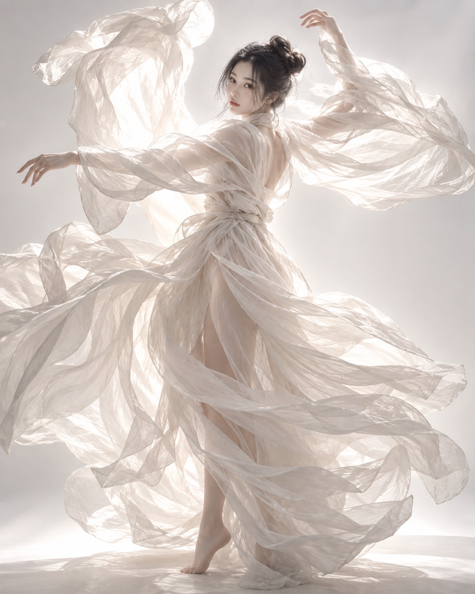
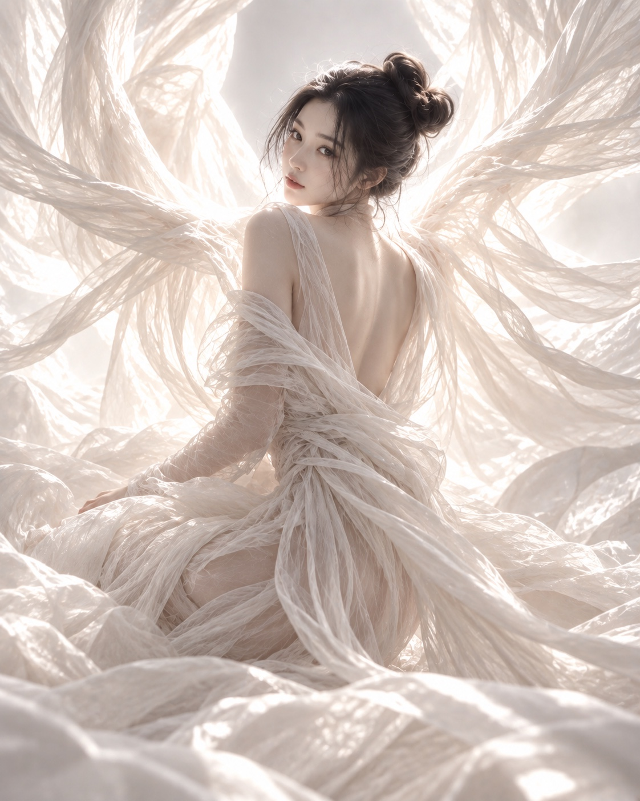
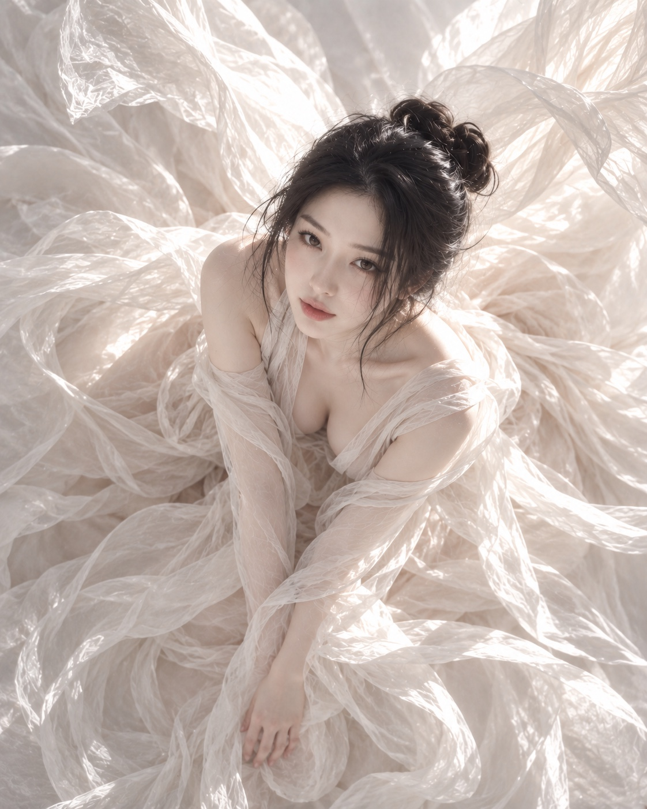
NEW EDITORIAL · 2026
KIMONO OF LIGHT
Khi ánh sáng trở thành một phần của thời trang
Có những vẻ đẹp không cần quá nhiều màu sắc để trở nên nổi bật. Chỉ cần trắng ngà, ánh vàng và một khoảnh khắc đủ tĩnh lặng cũng có thể tạo nên cả một thế giới.
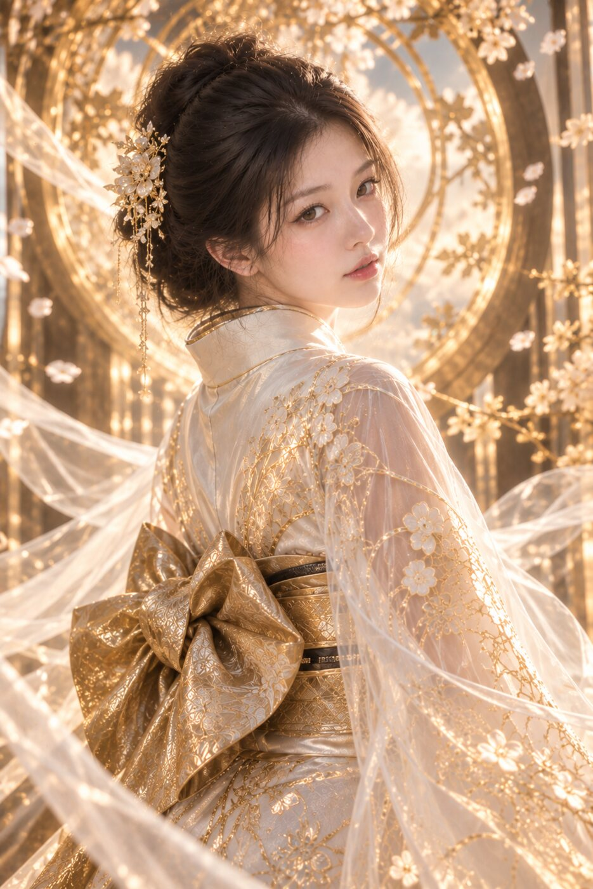
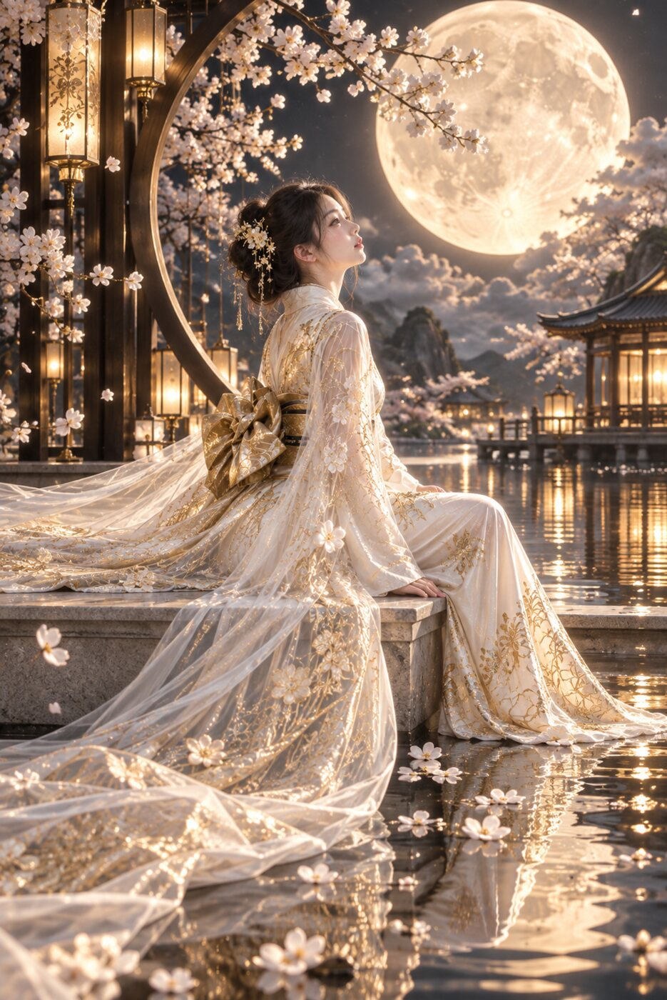
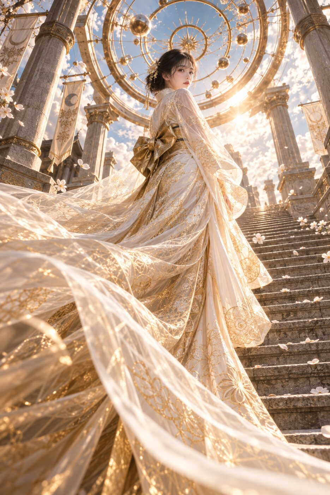
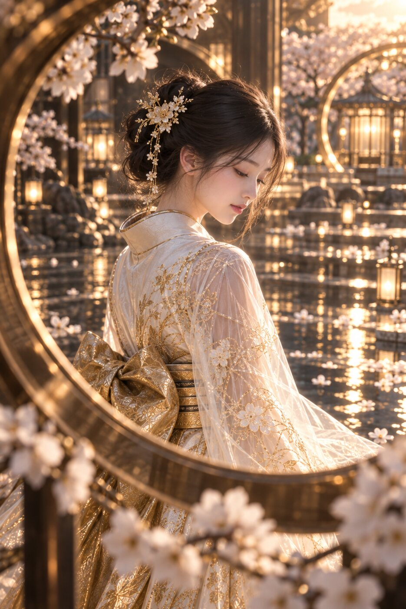
Lấy cảm hứng từ vẻ đẹp thanh tao của Kimono Nhật Bản, YUKI kết hợp những đường thêu ánh kim, lớp voan trong suốt và kiến trúc vòng tròn mang hơi hướng thiên thể để tạo nên một bộ ảnh vừa cổ điển, vừa siêu thực.
01Ánh trăng phản chiếu trên mặt nước.
02Hoa anh đào trôi trong gió.
03Những vòng sáng vàng mở ra như cánh cổng giữa thực tại và giấc mơ.
Mỗi khung hình được xây dựng với một góc nhìn khác nhau — khi dịu dàng ngoảnh lại, khi lặng yên bên hồ nước, khi đứng giữa kiến trúc khổng lồ, khi được nhìn xuyên qua những vòng tròn ánh sáng.
Không chỉ tạo một bức ảnh đẹp. YUKI muốn tạo nên một thế giới mà người xem có thể nhớ đến.
YUKI — Where Imagination Becomes Visual.
NEW EDITORIAL · 2026
BALLET OF LIGHT
Vũ điệu giữa ánh sáng
Có những chuyển động chỉ tồn tại trong một khoảnh khắc, nhưng đủ để trở thành một tác phẩm nghệ thuật.
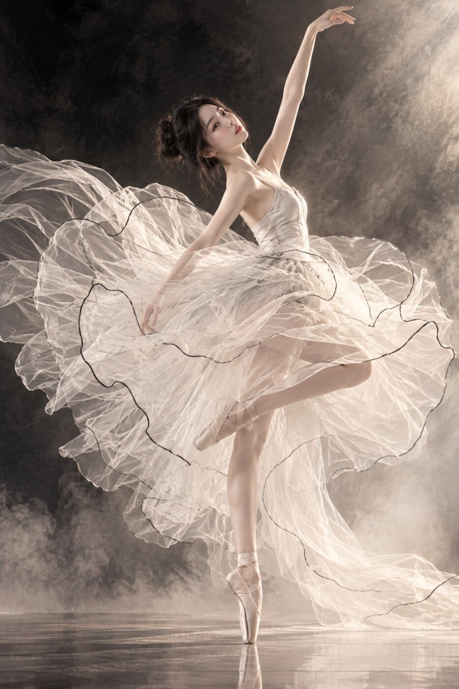
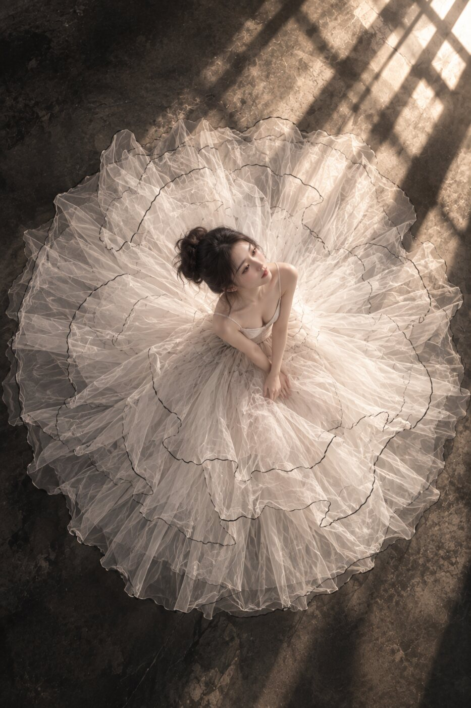
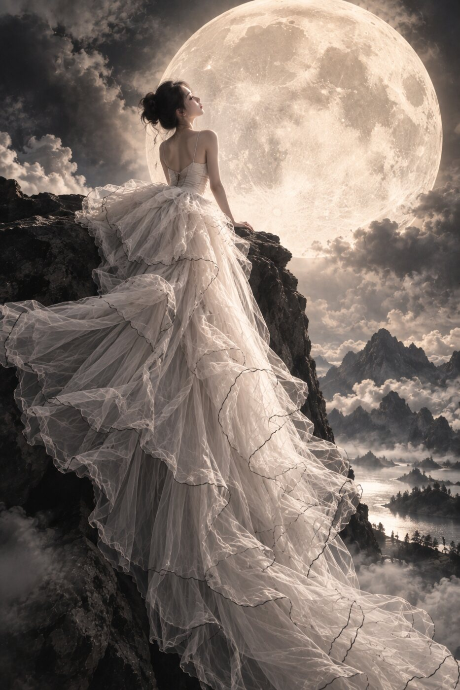
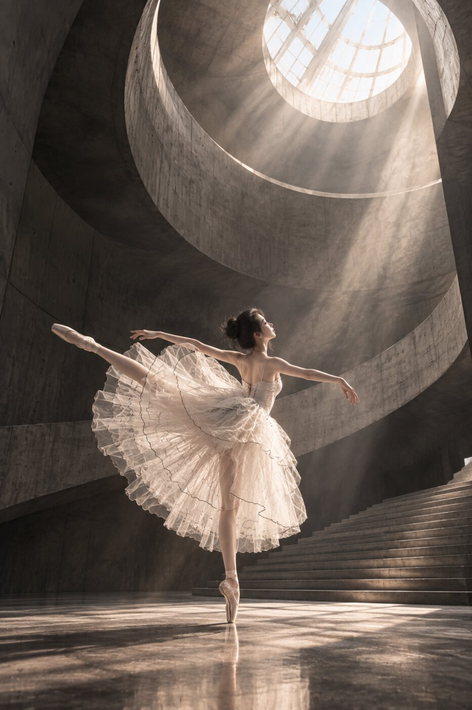
Lấy cảm hứng từ Ballet, ánh sáng và những lớp voan chuyển động, YUKI xây dựng bộ ảnh như một hành trình giữa thực tại và giấc mơ.
Từng khung hình mang một nhịp điệu riêng: khi cơ thể xoay giữa làn váy bung nở như cánh hoa, khi được nhìn từ trên cao như một tác phẩm sắp đặt, khi nhỏ bé giữa kiến trúc khổng lồ, và khi đứng trước vầng trăng giữa miền cảnh quan siêu thực.
Ánh sáng không chỉ chiếu lên nhân vật —
nó trở thành một phần của chuyển động.
Những lớp tulle trắng ngà, đường viền mảnh và sắc than trầm tạo nên sự đối lập giữa mong manh và mạnh mẽ, tĩnh lặng và chuyển động, con người và không gian.
Một chút ballet.Một chút điện ảnh.Một chút siêu thực.Và rất nhiều khoảng trống dành cho trí tưởng tượng.
YUKI — Where Imagination Becomes Visual. Sáng tạo. Tinh tế. Khác biệt.
DỊCH VỤ SÁNG TẠO
Một concept được phát triển riêng cho bạn
01
Concept cá nhân
Ảnh sinh nhật, kỷ niệm, cưới, thời trang và chân dung mang dấu ấn riêng.
02
Hình ảnh thương hiệu
Key visual, poster, banner, catalogue và bộ hình đồng nhất cho truyền thông.
03
Creative Direction
Moodboard, màu sắc, ánh sáng, bố cục và câu chuyện hình ảnh xuyên suốt.
QUY TRÌNH
YUKI đồng hành như thế nào?
01
Gửi ý tưởng và ảnh tham khảo
02
YUKI phát triển moodboard và hướng hình ảnh
03
Tạo bản nháp để thống nhất phong cách
04
Tinh chỉnh và bàn giao hình ảnh hoàn thiện
YUKI NOTES
Bài viết & hướng dẫn
Những nội dung ngắn giúp bạn hiểu rõ hơn trước khi lựa chọn.
01
Creative Direction
Từ cảm hứng đến một concept hình ảnh hoàn chỉnh
Một concept tốt bắt đầu bằng cảm xúc muốn truyền tải, sau đó mới đến màu sắc, trang phục và bối cảnh. Moodboard cần thống nhất về ánh sáng, chất liệu và nhịp điệu hình ảnh. Khi mỗi lựa chọn đều phục vụ cùng một câu chuyện, bộ ảnh sẽ có dấu ấn rõ ràng thay vì chỉ là những hình đẹp rời rạc.
02
AI Visual
Chuẩn bị ảnh tham khảo để tạo hình ảnh đẹp hơn
Ảnh chân dung nên rõ mặt, đủ sáng và không bị che khuất. Nếu cần giữ nhận diện, hãy gửi thêm nhiều góc mặt tự nhiên cùng hình trang phục hoặc phong cách mong muốn. Mô tả mục đích sử dụng và tỉ lệ ảnh ngay từ đầu giúp concept được xây dựng đúng cho bài đăng, poster hay ảnh cá nhân.
03
Thương hiệu
Vì sao hình ảnh cần một ngôn ngữ nhất quán?
Sự nhất quán không có nghĩa mọi hình ảnh phải giống nhau. Đó là việc giữ chung tinh thần qua bảng màu, kiểu ánh sáng, bố cục và cách kể chuyện. Một ngôn ngữ thị giác rõ giúp khách hàng nhận ra thương hiệu nhanh hơn và khiến từng nội dung mới trở thành một phần của tổng thể.
CREATE WITH YUKI
Biến ý tưởng của bạn thành hình ảnh
Chia sẻ concept hoặc cảm hứng để YUKI cùng bạn phát triển.